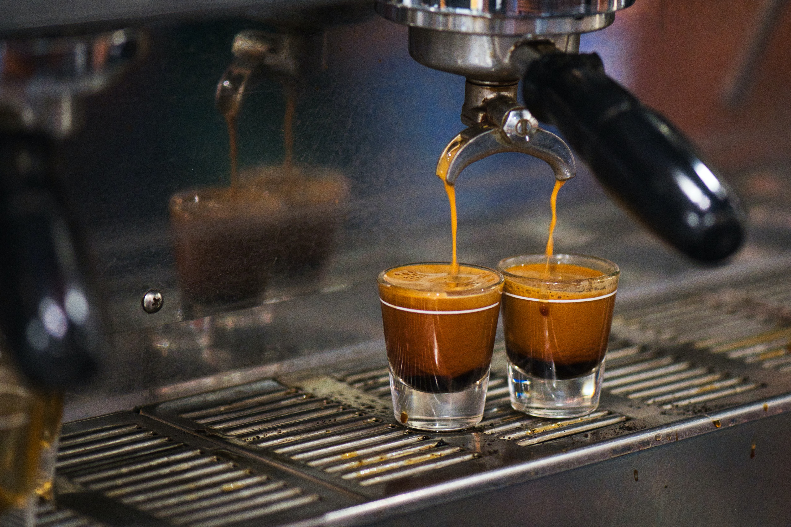

룽고(Lungo)는 이탈리아어로 '길다'를 의미한다.[1] 이에 에스프레소 룽고(Esprèsso Lungo)는 기존 에스프레소에 비해 더 긴 시간동안 추출한 커피를 의미하며, 줄여서 '룽고'라고 일컫는다. 에스프레소는 대체로 25~60ml의 물로 18~30초간 커피를 추출하는데 반해, 룽고는 약 1분간 130~170ml의 물을 이용하여 추출한다.[2] 단, 추출 시간과 양은 커피콩의 종류, 추출 기계의 압력 등 경우에 따라 달라질 수 있다
